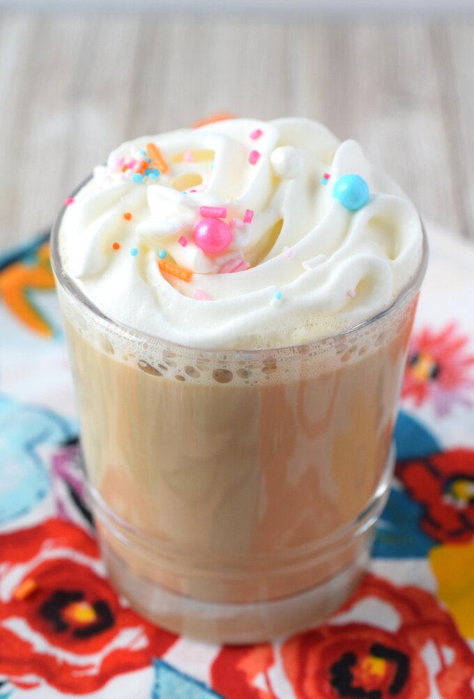

Vanilla Latte

Ingredients
- 60ml of espresso
- 1 cup of milk
- 2 tablespoons of vanilla syrup
- Whipped cream
instructions
- In a small saucepan over medium heat, combine milk and vanilla syrup. Stir frequently for about 4-5 minutes or until the milk has warmed up.
- Using an immersion blender or handheld mixer, beat milk until it foams up and has a frothy consistency.
- Pour espresso and the vanilla milk into a mug. Top with whipped cream and serve.